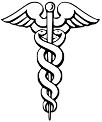

Medicine is the science and practice of diagnosing, treating, and preventing diseases, injuries, and other physical and mental impairments. It plays a crucial role in maintaining and improving human health, enabling people to live longer, healthier lives. Medicine combines knowledge from biology, chemistry, pharmacology, and technology to advance healthcare and save lives. It impacts every society, influencing quality of life and economic stability.
The history of medicine dates back thousands of years, evolving from primitive practices to a sophisticated scientific discipline. Early humans used herbal remedies and rituals to heal ailments, while ancient civilizations like the Egyptians, Greeks, and Chinese laid foundations for medical knowledge . Hippocrates, often called the “Father of Medicine,” introduced the ethical practice of medicine and the importance of observation. Over centuries, discoveries such as the germ theory by Louis Pasteur and advancements in surgical techniques transformed medicine into a modern science.
Medicine serves various essential purposes: it treats acute illnesses, manages chronic conditions, prevents disease through vaccinations, and improves quality of life through pain relief and rehabilitation. It can be divided into different branches such as pharmacology, surgery, psychiatry, and pediatrics, each addressing specific aspects of health . Beyond treatment, medicine also plays a preventive role in public health by controlling epidemics and promoting healthy lifestyles.
Despite tremendous progress, medicine faces many challenges. The rise of antibiotic resistance threatens to undermine the effectiveness of existing drugs. Unequal access to healthcare remains a global issue, with many communities lacking essential medicines and medical services. Additionally, ethical dilemmas such as patient consent, genetic modification, and end-of-life care demand careful consideration. The complexity of emerging diseases, such as COVID-19, also requires rapid adaptation in medical practices.
The future of medicine is promising with advances in technology and personalized care. Innovations like artificial intelligence, telemedicine, and genetic engineering are revolutionizing diagnosis and treatment. Precision medicine, which tailors treatment to an individual’s genetic makeup, holds great potential to improve outcomes. Moreover, global efforts toward universal healthcare aim to make medical services accessible to all, ensuring health equity worldwide.
